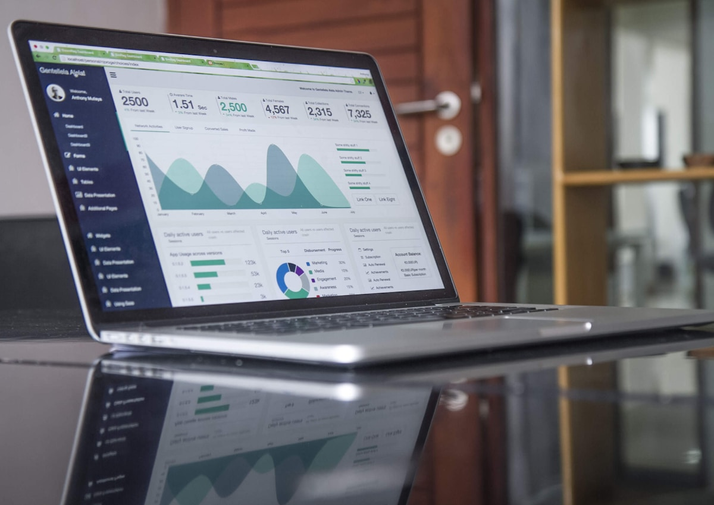
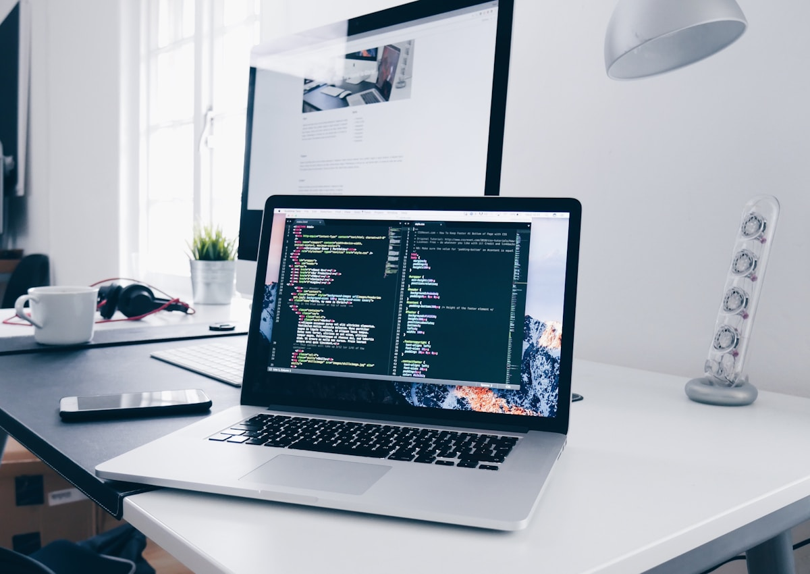

Real photo direction
Replaced abstract visuals with real workspace, coding, dashboard, and planning photos.
Responsive website brief
A sharper Figma-to-code landing page with real workspace photography, polished sections, sticky navigation, and an interactive zoom carousel.
Website system
Translate the design direction into a complete browser-ready experience with strong hierarchy, real imagery, accessible interactions, and fast static delivery.

What changed
The redesign uses real web-work imagery, cleaner contrast, and production-minded sections so the assignment feels closer to a client-ready website.
Replaced abstract visuals with real workspace, coding, dashboard, and planning photos.
Updated headings and labels so every section connects to web design and frontend delivery.
Improved hero scale, content rhythm, cards, spacing, and contrast for quicker scanning.
Kept the image carousel and zoom preview, now using real website process photography.
Adjusted mobile hero, image crops, cards, and buttons to stay clean on narrow screens.
Preserved the vanilla file structure for GitHub and Vercel with no framework dependency.
Workflow
The page now reads like a modern website build: reference interpretation, visual asset direction, responsive implementation, and deployment in one focused flow.

Website photo gallery
Hover or focus any website image to open a zoomed preview. Use the arrow controls to move through the carousel.
Case study
The new visual direction makes the page feel tied to real design work, real frontend delivery, and real product review instead of generic placeholders.

Resources
Track typography, spacing, responsive states, interactions, and asset requirements.
View checklistReview desktop, tablet, mobile, hover states, and keyboard interactions before launch.
View guideKeep GitHub, Vercel, live URLs, and deployment verification in one simple record.
View notesReview the website
Share a work email and we will package the live URL, GitHub repo, and implementation notes for review.